Lab 2: Semantic segmentation with Fully Convolutional Networks
Introduction
Semantic segmentation 语义分割
In the previous lab, we used Convolutional Networks to classify images into different classes (numbers, cats/dogs).
语义分割是一项更进一步的计算机视觉任务，其目的是给每一个像素进行分类
Semantic segmentation is a computer vision task that takes classification a step further, by assigning a class to every pixel of an image.

Of course, this problem is much harder than classification. Semantic segmentation is useful for any application that requires a dense classification, such as urban mapping, medical image segmentation, self-driving cars…
Fully Convolutional Networks 全卷积网络
全卷积网络即全部使用卷积操作的神经网络。
As the name implies, Fully Convolutional Networks (FCNs) are networks that only use convolution operations.
卷积神经网络（CNNs）的最后一般都是全连接网络，用于输出用于最终分类的标签。
CNNs usually end with some Fully Connected layers for the final classification (we saw that in the previous lab), in
order to output a specific number of values per image.
而全卷积网络不同，输出的是一个分割图， 分割图的大小与输入图的大小一致。所以最终的分类也是由卷积层完成的。
FCNs on the other end, need to output a segmentation map that has the same size as the input image, so the final classification is done by convolutional layers.
For example here is the SegNet architecture:

可以看见，网络有收缩和扩张两个部分，可以称之为“编码器”和“解码器”。编码器部分使用卷积和池化来计算高等级特征，解码器使用这些特征进行上采样并生成分割图。大部分的分割神经网络有类似的结构。
As you can see, the network has an “contracting” part and an “expanding” part. This is called an Encoder-Decoder architecture. The Encoder part computes high-level features using convolution and pooling operations, and the Decoder part uses those features and upsamples them to create a segmentation map. Most segmentation neural networks have an architecture like this.
Skip connections
我们常常直接复制一些来自网络其他层的信息（如从编码器直接复制信息到解码器）。这部分信息可以是池化索引，甚至是整个的特征图。 这样可以保留高频信息和边界信息，这些信息可以保证我们得到一个更全局的视野域和更准确的边界。复制之前的信息并将其连接到另一部分的网络，我们称这个操作为残差连接。在ResNets中使用的是短残差连接，而今天要用到的U-Nets中为长残差连接。
It is common to directly copy some information from different stages of the encoder, in order to use it in the decoder. It can be pooling indices or even entire feature maps. This restores some high frequency location and boundary information in the encoder, which yields a more global field of view for every pixel and more precise edges. Copying previous information and concatenating in an other part of a network is called a skip connection. They can be short skips (as in ResNets) or long skips (as in U-Nets).
What you will learn in this lab
- How to create small tiles from huge satellite/aerial images
- How to create a custom PyTorch Dataset class
- How to handle images and masks
- How to do on-the-fly data augmentation in PyTorch
- How to implement an FCN (U-Net)
- How to implement custom metrics and loss functions for segmentation
GPU Runtime
Please check that you are using a GPU runtime! (Runtime -> Change Runtime type)
Importing Libraries
1 | # Libraries |
Part 1: A new kind of dataset
For this lab, we will use the Inria Aerial Image Labelling Dataset (https://project.inria.fr/aerialimagelabeling/), which is a high resolution (0.3m/pixel) building segmentation dataset that Inria released in 2017. It is already widely used by the scientific community and in industry applications.
It contains images and corresponding masks. The mask is white (255) for the building class, and black (0) for the not building class.
Since this dataset is quite big and takes a long time to download (28GB), we will only work on the city of Chicago. Which means we have 36 images of 5000x5000 pixels (about 1.8GB of data). It is enough for our little experiment, but if we want our method to generalize to other cities, we will need more data. With Deep Learning, data is key!

Downloading the data
Run the following code to get the data.
1 | !wget -O chicagopng.zip http://gaetanbahl.engineer/chicagopng.zip |
1 | !unzip -uo chicagopng.zip |
Creating small patches
原图的分辨率太大，所以使用imagemagick把图片切割称小的batch
Our images have a size of 5000x5000 pixels. It would be impractical to train a neural network directly on these images, because of memory limitations. We have to make patches.
We can do this using ImageMagick’s convert tool.
1 | #make directories for images and ground truth |
1 | #create tiles of 250x250 pixels |
1 | # check that the number of patches is correct |
Number of image patches
14400
Number of ground truth patches
14400
Creating a custom Dataset class 创建自定义数据集
In order to load our data, we will need to create our own Dataset subclass. Every segmentation dataset is stored differently, so PyTorch doesn’t have a specific class for that.
创建一个pytorch数据集的类，我们需要完成的最基本的两个函数是 len 和 getitem 。 这样我们就可以使用len(mydataset) 和 mydataset[i] 这样的操作。
As you can see in the code below, it is very easy to create a custom dataset class in PyTorch. All we need to implement are the len and getitem functions. len allows you to run len(mydataset), and getitem allows you to access dataset elements like this: mydataset[i]
1 | class BinarySegmentationDataset(torch.utils.data.Dataset): |
1 | chicago_data = BinarySegmentationDataset("img_patches", "gt_patches") |
Number of images in dataset: 14400
(tensor([[[0.5451, 0.5059, 0.5059, ..., 0.5412, 0.5412, 0.5294],
[0.5255, 0.5098, 0.5451, ..., 0.5373, 0.5608, 0.5216],
[0.5137, 0.5294, 0.5451, ..., 0.5608, 0.5725, 0.5647],
...,
[0.1176, 0.1216, 0.7098, ..., 0.3882, 0.4431, 0.4706],
[0.1098, 0.2000, 0.6941, ..., 0.1843, 0.1490, 0.1686],
[0.1373, 0.2078, 0.6000, ..., 0.2353, 0.2118, 0.2196]],
[[0.5882, 0.5569, 0.5412, ..., 0.5529, 0.5490, 0.5373],
[0.5569, 0.5412, 0.5686, ..., 0.5451, 0.5647, 0.5294],
[0.5490, 0.5490, 0.5647, ..., 0.5647, 0.5765, 0.5725],
...,
[0.1412, 0.1373, 0.7216, ..., 0.4000, 0.4510, 0.4824],
[0.1412, 0.2157, 0.7176, ..., 0.2000, 0.1725, 0.1961],
[0.1294, 0.2078, 0.6157, ..., 0.2980, 0.2745, 0.2980]],
[[0.4667, 0.4431, 0.4431, ..., 0.4667, 0.4706, 0.4627],
[0.4706, 0.4431, 0.4784, ..., 0.4667, 0.4784, 0.4588],
[0.4627, 0.4667, 0.4824, ..., 0.4902, 0.5059, 0.5059],
...,
[0.1294, 0.1333, 0.6353, ..., 0.3804, 0.4196, 0.4431],
[0.1137, 0.1882, 0.6275, ..., 0.1804, 0.1608, 0.1804],
[0.1294, 0.1922, 0.5412, ..., 0.2667, 0.2510, 0.2627]]]), tensor([[[0., 0., 0., ..., 0., 0., 0.],
[0., 0., 0., ..., 0., 0., 0.],
[0., 0., 0., ..., 0., 0., 0.],
...,
[0., 0., 0., ..., 1., 1., 1.],
[0., 0., 0., ..., 0., 0., 0.],
[0., 0., 0., ..., 0., 0., 0.]]]))
torch.Size([3, 250, 250])
torch.Size([1, 250, 250])
Q1: Displaying some data
Using the display_tensor() function, display some patches and their associated ground truth.
1 | img, gt = chicago_data[1200] |
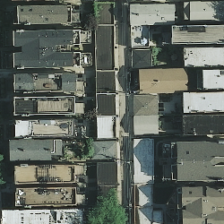
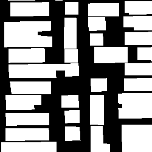
Q2: Data augmentation
当数据不够多的时候，我们往往可以使用一些随机的变换来制造更多的数据。
Since we do not have that much data, we need to “make” more. Data augmentation is very important in Deep Learning, because:
- There is never enough data
- Having more data makes the model more robust
- Having more data can make the training more stable
Modify the Dataset code to add some random transforms from torchvision.transforms, before the ToTensor transform.
The documentation is here: https://pytorch.org/docs/stable/torchvision/transforms.html#transforms-on-pil-image
Use transforms such as random flips, random rotations, or anything you like. PyTorch allows you to chain a list of multiple transforms with transforms.Compose.
1 | class BinarySegmentationDataset(torch.utils.data.Dataset): |
Q3: Check that your data augmentation is working
Display some augmented images in order to check that the images and masks are augmented in the same way. It is very important to do that, otherwise our training will not work properly! Display the “same” image and masks multiple times to see the effect of data augmentation. They should be different every time!
1 | chicago_data = BinarySegmentationDataset("img_patches", "gt_patches") |
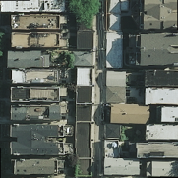
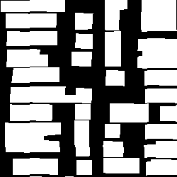
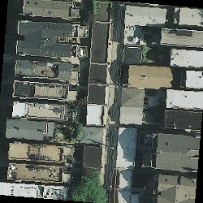
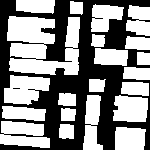
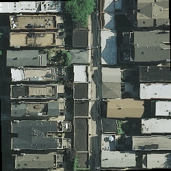
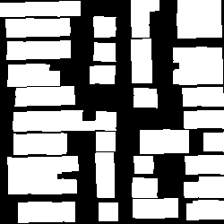
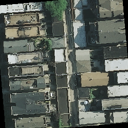
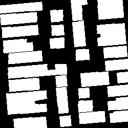
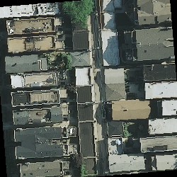
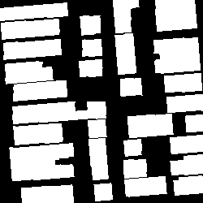
Q4: Split the data into train, val and test sets
As in the previous lab, split the dataset into three subsets (train, val and test), then, create DataLoaders for each of these sets.
You can use 10% of the whole set as a test set, and 10% of the rest as the validation set, for example. Feel free to change these percentages!
Pay attention to DataLoader parameters (batch_size, num_workers, shuffle). It is good to shuffle the training set, but useless to shuffle the other sets. “num_workers” allow PyTorch to process your data (and the augmentation) in parallel. This is important if you need to quickly feed data to your GPU to make your training faster.
HINT: use torch.utils.data.random_split twice
1 | test_split = 0.1 |
1440
11664
1296
Part 2: Implementing a U-Net 实现C-UNet网络
For our segmentation network, we will use the well known U-Net architecture (2015).

A compact U-Net
However, since U-Net is quite big (millions of parameters) and can take days to train, we will use a modified version of a more compact version of it: C-UNet (https://hal.inria.fr/hal-02277061/document)
Using a compact network will help us get a result faster during the lab. Feel free to implement the full U-Net architecture at home!
Here are the modifications we will do:
- Use 3x3 standard padded convolutions
- Use skip connections
- Return raw logits (no Sigmoid or Softmax)
Thus, our network has the following properties:
- Three “stages” for the encoder, with 2 normal 3x3 convolutions and a max pool for the first two stages
- Two “stages” for the decoder, with 1 transposed convolution and 2 3x3 convolutions per stage
- A non-linearity (ReLU) after each convolution (except the last one)
- Doubling of the number of feature maps at each stage (starting with 8)
- Skip connections (without cropping) between the two first encoder stages and the two decoder stages (see image above)

Q5: Implement the neural network 建立神经网络
Fill the code below to implement the network.
Do not forget to add an activation layer after each convolution operation. You can use the classic ReLU or any similar activation (eLU, PReLU, etc.) https://pytorch.org/docs/stable/nn.html#non-linear-activations-weighted-sum-nonlinearity
Note that this time, instead of using a Softmax as the last layer, we are returning raw logits (you will see why later). This means that a value above zero is a building, and a value below zero is not a building. Do not use ReLU after the last convolution layer!
1 | class CompactUNet(nn.Module): |
Use the following line to make sure that the forward pass works. Also check that the output shapes are correct. Make sure you understand where the numbers of parameters come from.
1 | summary(CompactUNet().cuda(), (3, 250, 250)) |
----------------------------------------------------------------
Layer (type) Output Shape Param #
================================================================
Conv2d-1 [-1, 8, 250, 250] 224
ReLU-2 [-1, 8, 250, 250] 0
Conv2d-3 [-1, 8, 250, 250] 584
ReLU-4 [-1, 8, 250, 250] 0
MaxPool2d-5 [-1, 8, 125, 125] 0
Conv2d-6 [-1, 16, 125, 125] 1,168
ReLU-7 [-1, 16, 125, 125] 0
Conv2d-8 [-1, 16, 125, 125] 2,320
ReLU-9 [-1, 16, 125, 125] 0
MaxPool2d-10 [-1, 16, 62, 62] 0
Conv2d-11 [-1, 32, 62, 62] 4,640
ReLU-12 [-1, 32, 62, 62] 0
Conv2d-13 [-1, 32, 62, 62] 9,248
ReLU-14 [-1, 32, 62, 62] 0
ConvTranspose2d-15 [-1, 16, 125, 125] 2,064
Conv2d-16 [-1, 16, 125, 125] 4,624
ReLU-17 [-1, 16, 125, 125] 0
Conv2d-18 [-1, 16, 125, 125] 2,320
ReLU-19 [-1, 16, 125, 125] 0
ConvTranspose2d-20 [-1, 8, 250, 250] 520
Conv2d-21 [-1, 8, 250, 250] 1,160
ReLU-22 [-1, 8, 250, 250] 0
Conv2d-23 [-1, 8, 250, 250] 584
ReLU-24 [-1, 8, 250, 250] 0
Conv2d-25 [-1, 1, 250, 250] 9
================================================================
Total params: 29,465
Trainable params: 29,465
Non-trainable params: 0
----------------------------------------------------------------
Input size (MB): 0.72
Forward/backward pass size (MB): 57.15
Params size (MB): 0.11
Estimated Total Size (MB): 57.98
----------------------------------------------------------------
Q6: Testing the implementation
Try the network on a batch of training data. Also try to display an output mask. Since the network is not trained, the mask should be black.
HINT: to get a single image from an output batch y, use y[0,:,:,:]
1 | net = CompactUNet() |
Part 3: Training a segmentation network
Training a segmentation is not that much different from training a classifier.
The type of output is different, so we will need new metrics and perhaps a new loss.
Specific metrics for segmentation 使用特别的度量来评价语义分割
准确率对于语义分割来说并不是一个很好的度量，特别是当数据集不平衡的时候。举个例子，对医疗图片进行分割的时候，目标的大小通常远远小于图片的分辨率，所以我们很可能获得99%的正确率但却并没有区分出任何东西（网络可以把所有的像素都认为是假就获得99%的正确率）
As a metric, accuracy is not always very good, especially when your data is imbalanced (which happens a lot in real life). For example, with medical image segmentation, the objects to detect are often very small compared to the size of the image. So it is sometimes possible to get 99% accuracy by not segmenting anything.
我们使用的芝加哥城市数据集有25%的建筑，所以也是不平衡，但并没有太严重。
Our Chicago dataset has around 25% of building pixels, so it is imbalanced but not too much.
Here is a good example of extreme imbalance. In this image, we are looking for a small tumor:

这就是为什么我们需要其他的度量，例如交并比，精确率，召回率或特异度
This is why we need other metrics, such as IoU (Intersection over Union), Precision, Recall or Specificity, which are more representative of what is really happening.
IoU, also called Jaccard coefficient, is used a lot in (binary) segmentation, because it only takes into account the parts of the image that actually need to be segmented:


The Dice coefficient is another widely used metric, similar to IoU: https://en.wikipedia.org/wiki/S%C3%B8rensen%E2%80%93Dice_coefficient
Here is an implementation of IoU:
1 | def iou_metric(logits, target): |
Loss and optimizer 损失函数和优化器
The output of our network is a single class, so we can use the Binary Cross Entropy loss. Since we did not put a sigmoid activation layer after the last convolutional layer, we will use BCEWithLogitsLoss. Otherwise, we would have to use BCELoss, which is less stable. It is good to look at the PyTorch documentation to know what’s what: https://pytorch.org/docs/stable/nn.html#bcewithlogitsloss
I put Adam as the optimizer here, but you can try anything from torch.optim. Adam has an adaptive learning rate for each weight of the network. The original learning rate is just an upper bound. This optimizer can allow you to reach a better local minimum, sometimes. Check the original paper for more info: https://arxiv.org/abs/1412.6980
1 | ##RE-RUN THIS CODE TO GET A "NEW" NETWORK |
Q7: Training loop
Fill the code below to create the training and validation loops.
1 | ## NUMBER OF EPOCHS TO TRAIN |
Q8: Test loop
Using the test dataloader you created, write a test loop (similar to a val loop). You should get about 85% accuracy.
1 | net.eval() |
Test accuracy: 0.8535168555555556 Test loss: 0.33079981009165443
Q9: Visualizing some test results
Visualize a few images from the test set, along with the neural network output and the associated ground truth.
注意网络的输出有负值，选择大于0的进行显示（大于0的值为建筑）
1 | iter_dl = iter(test_dl) |
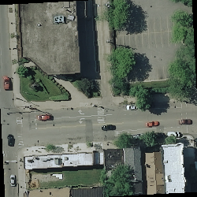
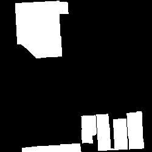
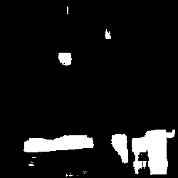
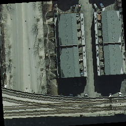
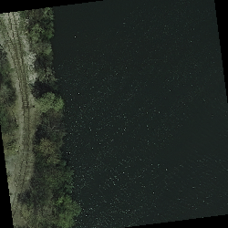


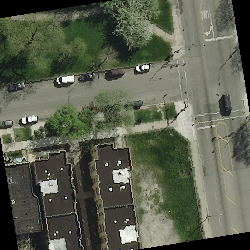
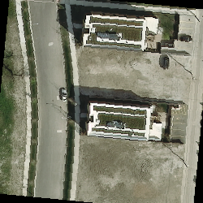
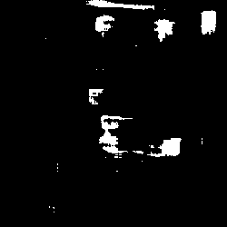
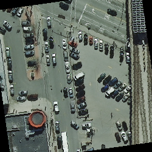
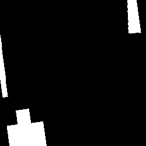
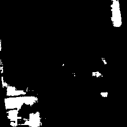
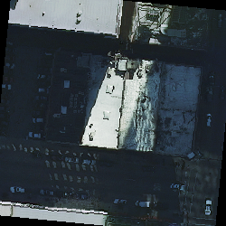
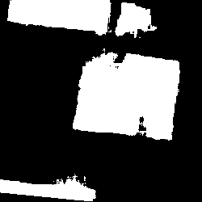
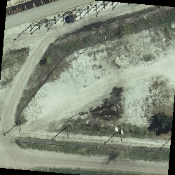

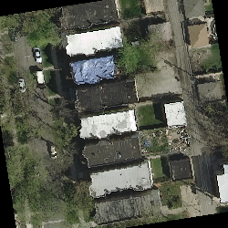
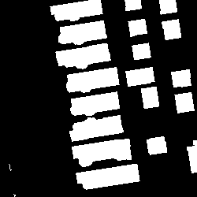
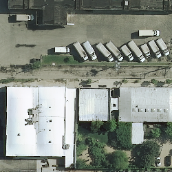
Specific losses for segmentation tasks 为分割任务专门定制的损失函数
损失函数的选择对于深度学习来说至关重要，因为损失函数决定了我们优化的方向是什么。当我们使用binary cross entropy loss的时候，我们仅仅是在优化每一个像素的精确率。在我们这样一个平衡的数据集中，使用这样的损失函数可能行得通，但是在其他一些不平衡的数据集中可能效果就不好了。
所以我们考虑使用一个基于IoU的损失函数，这样可以把IoU也加入到优化的目标中。
此外还有一些损失函数，例如Focal loss，它专注于高难度样本的训练，同样可以在不平衡的数据集中有好的表现。https://arxiv.org/abs/1708.02002
The choice of the loss function is important in Deep learning, because it determines what we are optimizing for. In the case of binary cross-entropy, we are purely optimizing for the best pixel-by-pixel accuracy. While it works in our quite balanced dataset, it may not work in others.
Since we are also measuring the IoU, it would be interesting to build an IoU-based loss function that tries to get us a better IoU.
Some other loss functions, such as Focal Loss, focus the training on hard examples. This can also be good for unbalanced semantic segmentation https://arxiv.org/abs/1708.02002
Q10: Jaccard (IoU) loss
实现Jaccard loss
Let’s implement the Jaccard loss. Fill the code below and replace the loss we used earlier (in the training loop) by the sum of binary cross entropy and jaccard loss. The loss looks like the metric we implemented earlier, except we are using 1 - “metric” because PyTorch tries to minimize a loss.
Please note that we are mixing the Jaccard loss with the Binary Cross Entropy loss with some alpha and beta coefficients. You can try to change them to give more importance to accuracy or to IoU.
1 | def jaccard_loss(logits, true): |